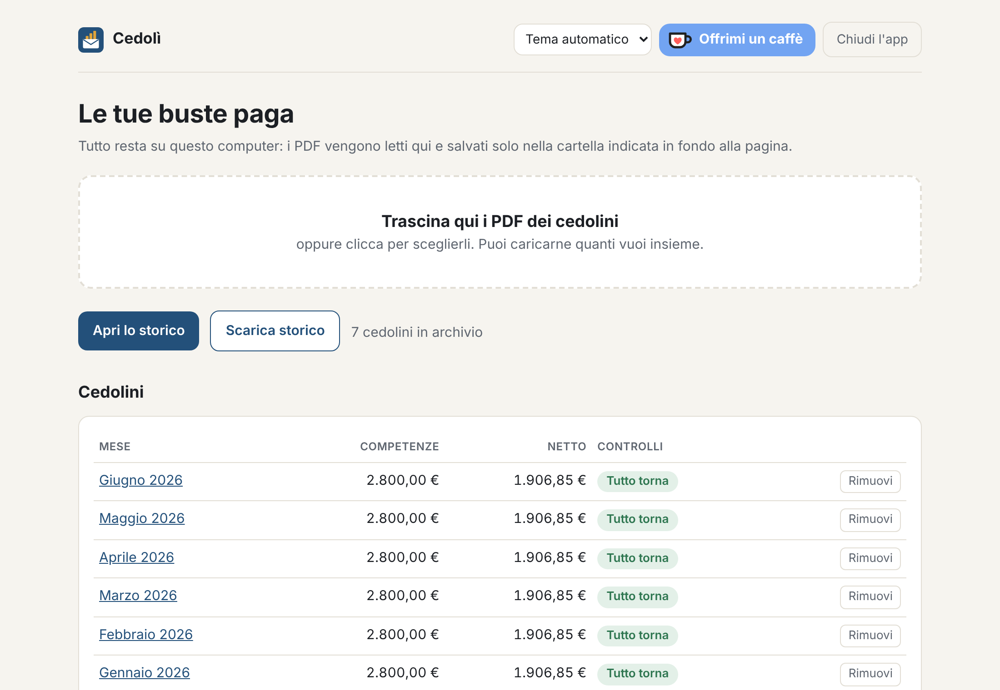
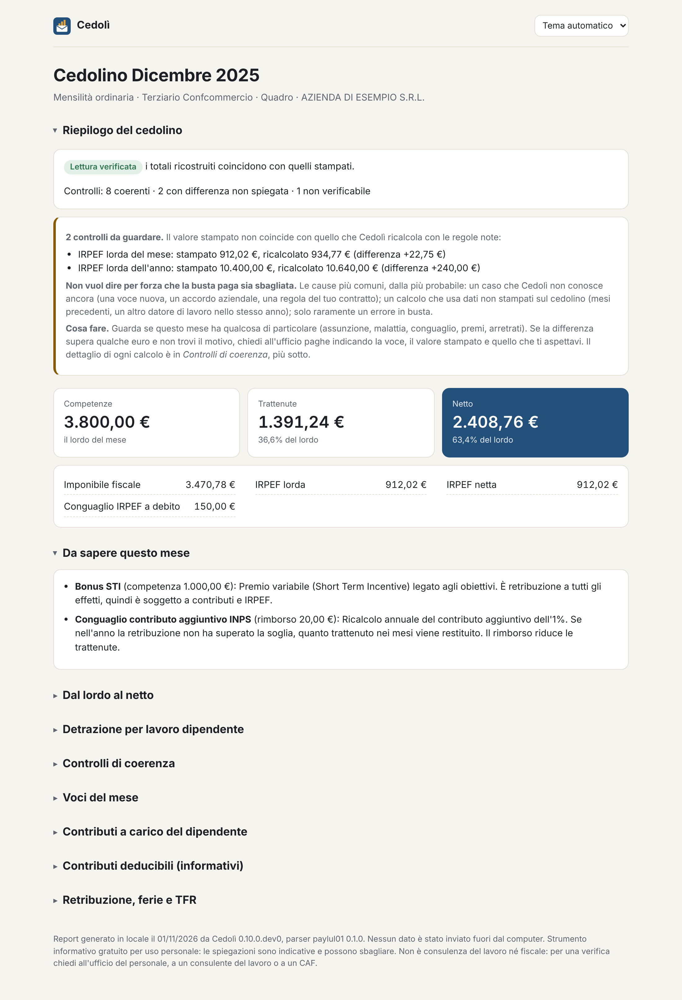
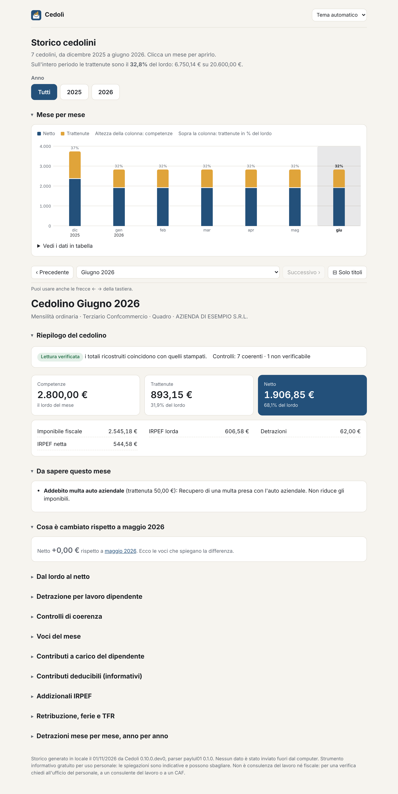

Quello che ti dà l'azienda, anche più mesi insieme.
Netto, trattenute e ogni voce particolare, con parole semplici.
Se un numero non torna te lo dice, con la differenza in euro e cosa chiedere.
Mese dopo mese, tredicesima compresa.



Nessun dato esce dal computer. Niente account, niente cloud.